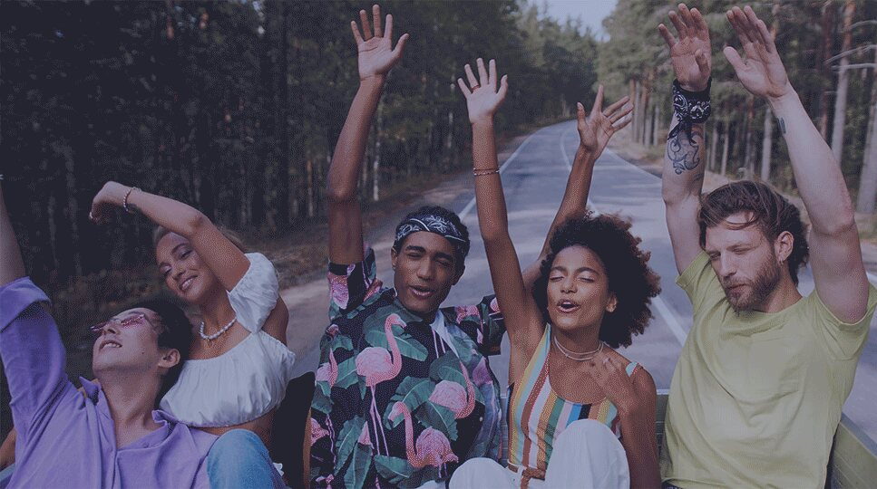
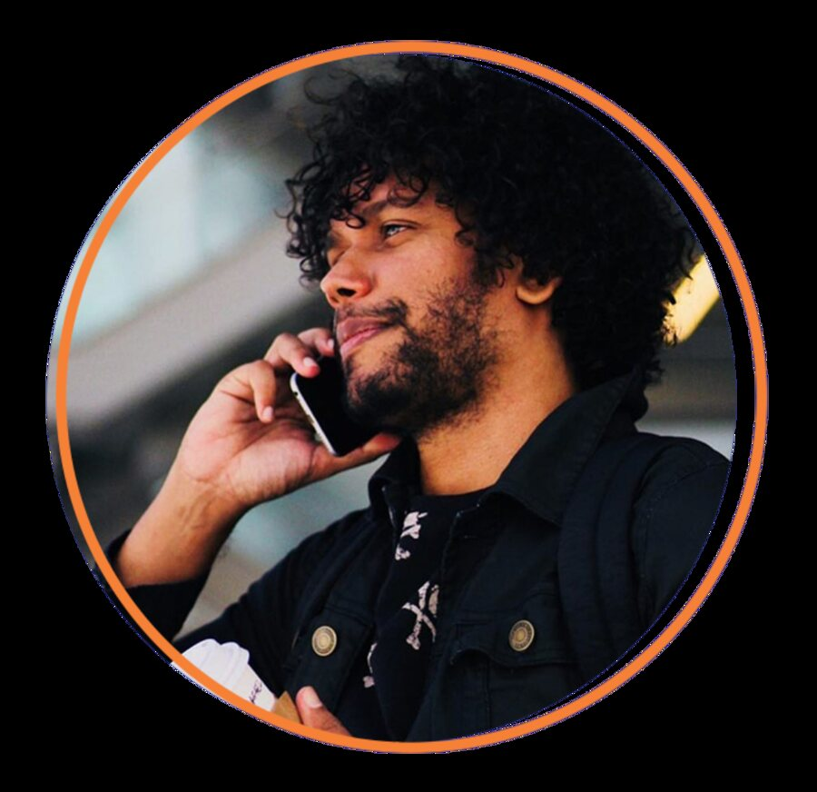
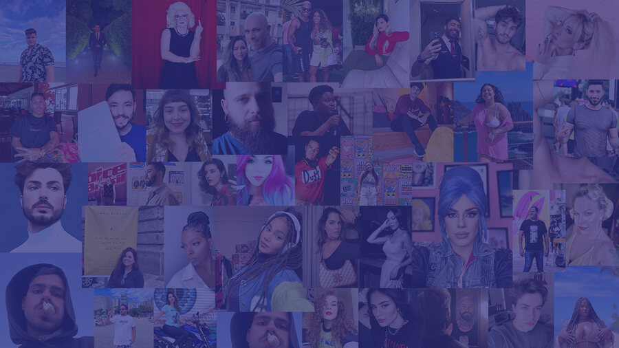
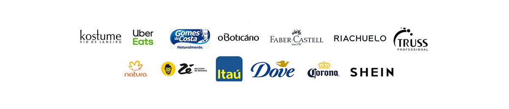

Agenciamento de influenciadores
Conecto marcas a creators que falam com o público certo. São 46 perfis em 7 estados, do micro ao mega influenciador, com alcance por rede e contato direto — sem PDF, sem procurar link.
“Pensar influência é se conectar com o futuro do marketing, e estar aberto a toda essa mudança é trilhar o caminho certo para a sua comunicação.”
Rafael Rafic
Quem é Rafael Rafic
Sobre
Olá, sou Rafael Rafic e já atuo na área de agenciamento de influenciadores e artistas há mais de 6 anos. Meu propósito é desenvolver o perfil de micro influenciadores e, com isso, elevar a sua qualidade no marketing de influência, reverberando em maior engajamento e audiência.
Quero estar lado a lado do meu agenciado e parceiro, pensando em soluções inovadoras e criativas nas suas entregas e criando projetos direcionados a empresas que se conectam com seus conteúdos. Abraçando o processo como um todo, do orçamento à entrega das métricas.

O casting
Meu casting
- 46creators agenciados
- 7estados atendidos
- 15macro e mega influenciadores
- 104perfis de rede social
A lista completa fica no site, com filtro por porte, nicho e região. Cada creator mostra o alcance em cada rede, e o ícone leva direto ao perfil.

Já fizeram job conosco
Marcas parceiras

76% dos internautas são impactados por influenciadores.
Fonte: Meio & Mensagem
Perguntas frequentes
Dúvidas de quem contrata
Quantos creators tem o casting de Rafael Rafic?
O casting tem 46 creators agenciados, distribuídos em 7 estados brasileiros: 15 macro e mega influenciadores, 25 médios e 6 micros. Somados, são 104 perfis de rede social ativos.
Em quais estados estão os creators?
São Paulo, Rio de Janeiro, Minas Gerais, Paraná, Rio Grande do Sul, Santa Catarina e Bahia. A maior concentração é em São Paulo, com 31 dos 46 creators.
Que nichos o casting cobre?
Humor, beleza, moda, dicas, entretenimento, diversidade, família, negócios, casa e decoração, gastronomia, viagens e público adulto. A página do casting permite filtrar por nicho, porte e região.
Como contratar um creator para a minha marca?
Escreva para rafic@rafaelrafic.com ou chame no WhatsApp 11 97469-4636. Você pode consultar o casting completo antes, com o alcance de cada creator em cada rede e o link direto para os perfis.
Sou creator. Como faço para ser agenciado?
Fale pelo mesmo e-mail ou WhatsApp, contando seu nome, suas redes, cidade, nicho e alcance atual. Rafael Rafic agencia influenciadores há mais de 6 anos, com foco em desenvolver o perfil de micro influenciadores.